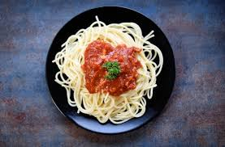
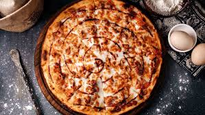
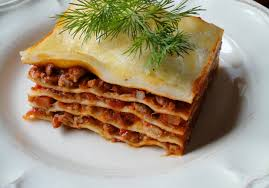
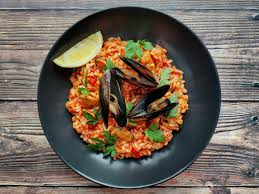
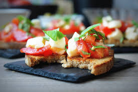
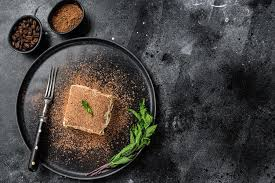
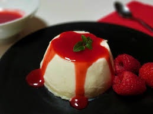
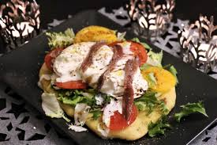
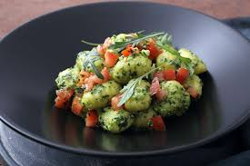
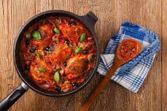

Witamy w Restauracji Włoskiej
Zapraszamy do naszej restauracji, gdzie serwujemy najlepsze włoskie potrawy!










O Nas
Restauracja Toscana to miejsce, gdzie tradycja spotyka się z nowoczesnością. Serwujemy autentyczne włoskie potrawy przygotowywane z najwyższej jakości składników, które sprowadzamy bezpośrednio z Włoch. Nasze dania odzwierciedlają pasję do włoskiej kuchni, łącząc klasyczne receptury z nowoczesnym podejściem do gotowania. W naszej kuchni korzystamy tylko z najświeższych produktów, aby każdy posiłek był prawdziwą ucztą dla zmysłów.